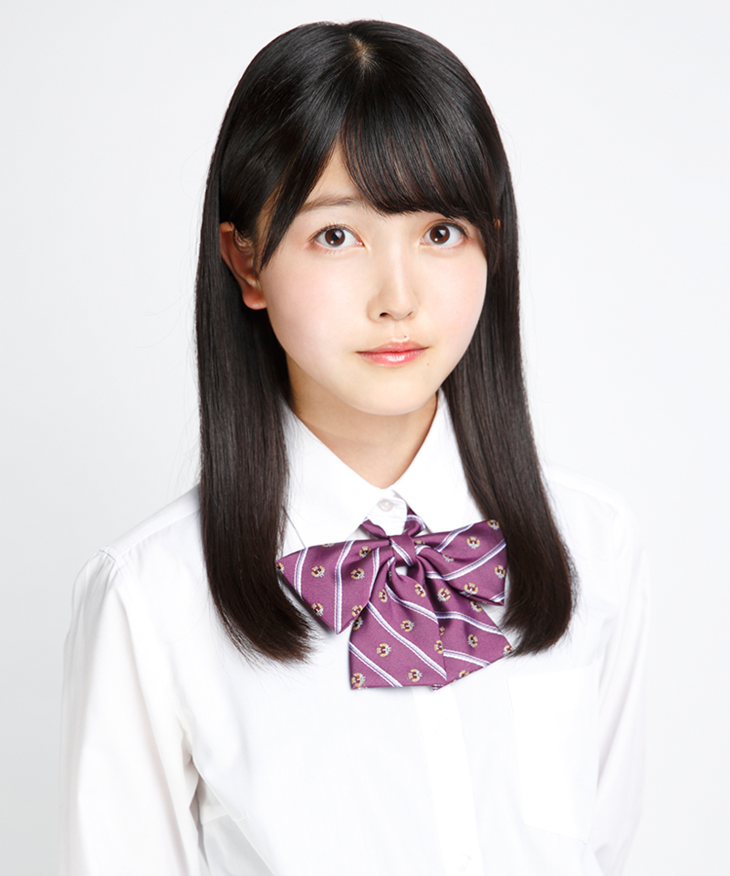

サカミチ
サカミチ久保史緒里くぼしおり

乃木坂46（2016年）・最新
乃木坂46 3期生 ・ 卒業・活動終了
センター曲：5曲（シングル表題曲センター：1曲） フォーメーション/歌唱参加：64曲
ライブ記録：センター 65公演・出演記録のある公演 197公演
ブログ記事：139件
学年：2001年度（同級生 全17人を見る）
フォーメーション統計：登場 32曲・フロント（1列目）10曲
よく隣になるメンバー：山下美月（8回）、与田祐希（5回）、秋元真夏（4回）
センター曲
未来の答え、不眠症、毎日がBrand new day、僕が手を叩く方へ、人は夢を二度見る
推しに登録すると、トップページに「推しの新着」（最新のブログ）が出ます。
歴代アー写など（2枚）
タップすると上の写真が切り替わります。上の写真をタップすると最新のアー写に戻ります。